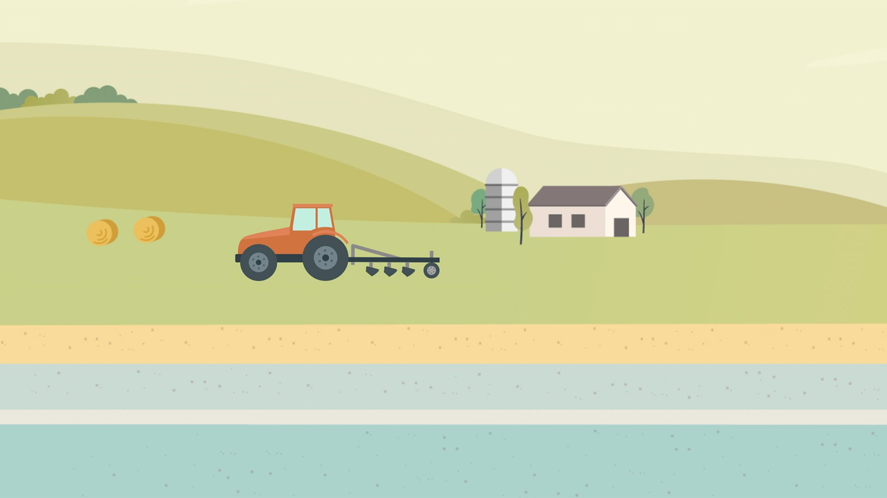
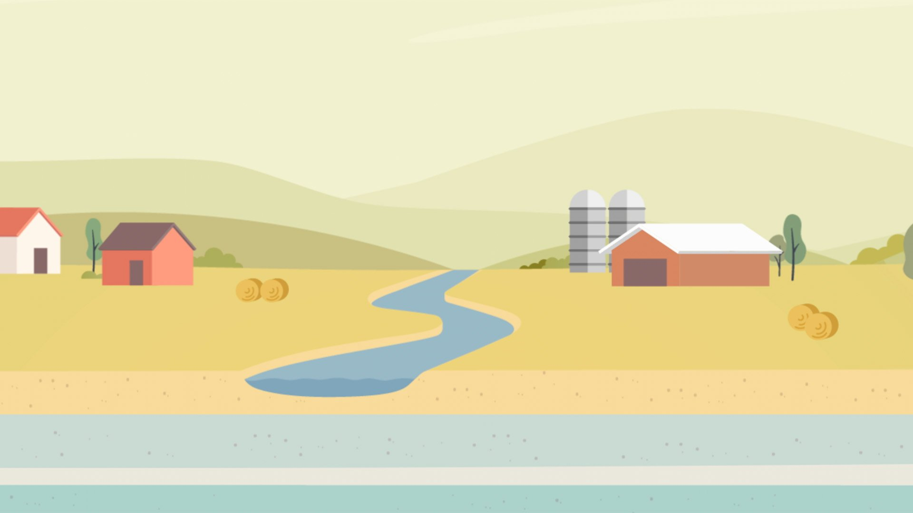
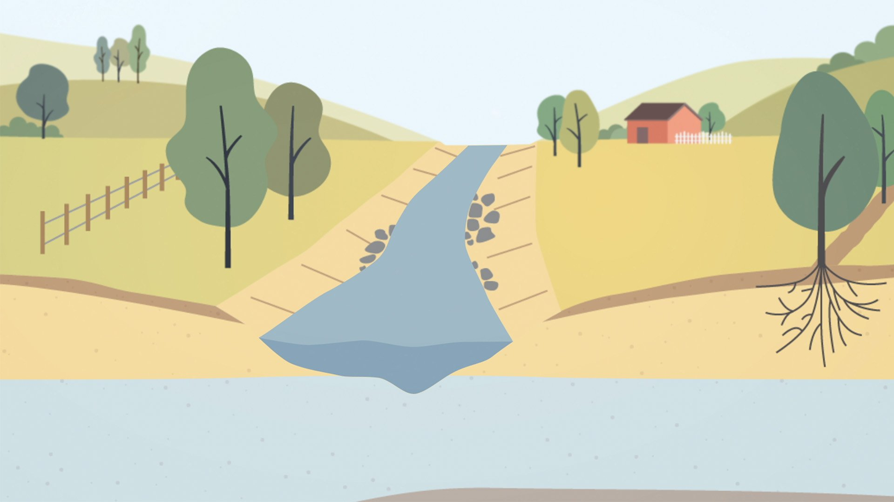
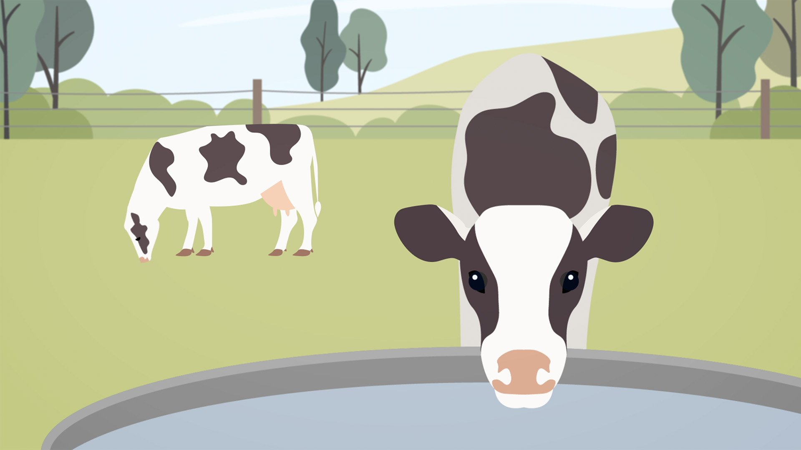
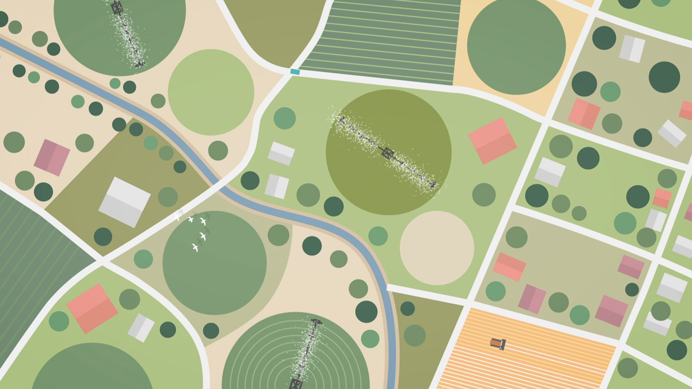
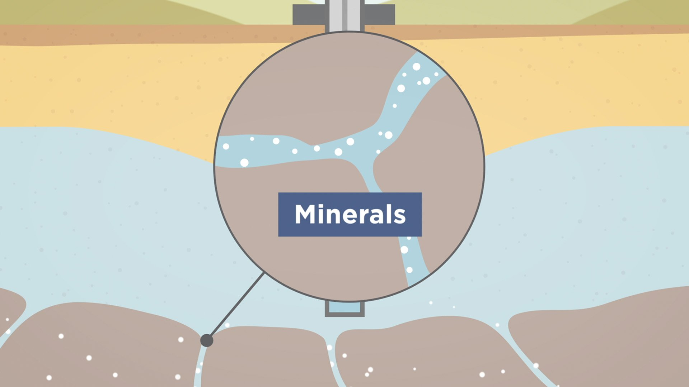

Government · Environment
What is Groundwater?
An explainer for a water system nobody can see. Its reception led to a six-part series.
The challenge
Groundwater is easy to manage badly and hard to explain well, because nobody can see it. After prolonged drought put the state's groundwater systems under public scrutiny, the Department needed to help people understand how groundwater works and how access and management decisions get made.
The approach
I led creative direction, illustration and motion design on an explainer built around a calm, clear visual narrative. It translates technical and regulatory content into something the public can follow without a background in hydrology. Seasonal cycles became the visual device for showing time passing and groundwater recovering.
The result
The animation launched on the Department's website and social channels in long and short cuts. Its reception led to a six-part animation series, extending the same approach across the core aspects of groundwater management.





